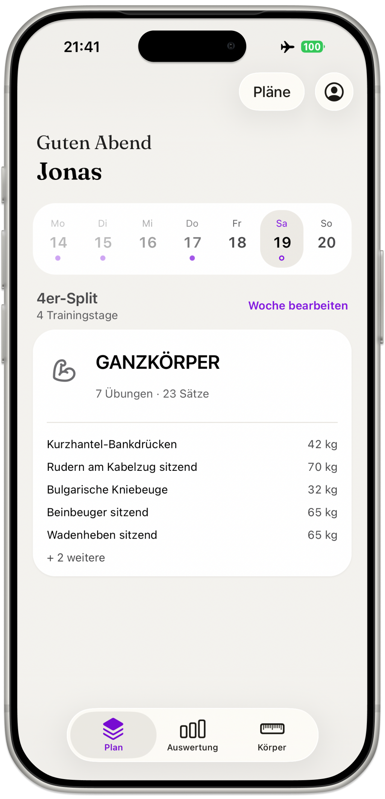
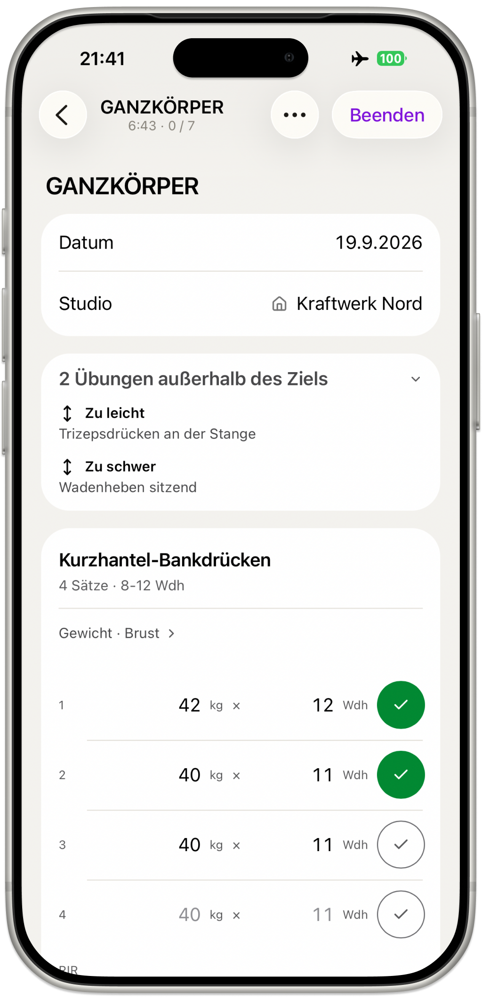

Tracken. Nicht scrollen.
Satzwerk erfasst dein Training und wertet es aus. Für Leute, die ihren Plan schon haben.
Für iPhone. Keine Werbung, kein Konto nötig, deine Daten bleiben auf dem Gerät.


Eintragen, ohne den Satz zu unterbrechen. Gewicht und Wiederholungen tippen, abhaken, weiter. Der nächste Satz übernimmt den Wert als grauen Vorschlag. Aufwärmsätze sind eigene Zeilen und zählen in der Auswertung nie mit. Am letzten Satz trägst du den RIR ein, daraus rechnet die App die Intensität.
Ausgewertet wird, was eine Entscheidung trägt: harte Sätze je Muskelgruppe, diese Woche gegen die Vorwoche. Der Anteil der Sätze nahe am Limit. Der Verlauf je Übung über die Zeit. Dazu der Körperbereich mit Gewicht und Wochenrate, Körperfett aus Hautfalten, fettfreier Masse und Kalorienziel.
Satzwerk zeigt, wo du stehst. Es sagt dir nicht, was du tun sollst. Keine Handlungsempfehlungen, kein „nimm mehr Gewicht“, kein „Deload empfohlen“. Ein Onboarding kennt deinen Bandscheibenvorfall nicht, deinen Blutdruck nicht und dein Sprunggelenk nicht. Pläne kommen von Menschen, die dich kennen. Die Zahlen kommen von hier.
Was drin ist
- 170 Übungen, eigene frei anlegbar
- RIR je Satz
- Harte Sätze je Muskelgruppe
- Verlauf je Übung
- Mehrere Studios getrennt
- Körperfett aus Hautfalten
- Kalorienbedarf und Zielrate
- Live Activity am Sperrbildschirm
- Export und Wiedereinlesen
- Deutsch und Englisch
- Metrisch und imperial
- Hell, dunkel oder automatisch
- Apple Health (schreibend)
Keine fertigen Trainingspläne, kein Feed, kein Kalorienzählen.
Für das nächste Training.
Im App StoreFragen und Antworten
Was ist Satzwerk?
Satzwerk ist ein Trainingstagebuch für das iPhone. Du trägst Gewicht, Wiederholungen und RIR je Satz ein, und Satzwerk wertet daraus harte Sätze je Muskelgruppe, Intensität und den Verlauf je Übung aus. Dazu kommt ein Körperbereich mit Gewicht, Körperfett aus Hautfalten und Kalorienziel.
Für wen ist die App gedacht?
Satzwerk ist für Leute gedacht, die ihren Trainingsplan schon haben und ihn nur noch erfassen und auswerten wollen. Die App gibt keine Handlungsempfehlungen und enthält keine fertigen Pläne. Wer einen Plan sucht, ist bei einem Trainer oder einer Trainerin richtig.
Brauche ich ein Konto?
Nein, für Satzwerk ist kein Konto nötig. Die App läuft ohne Anmeldung, ohne E-Mail-Adresse und ohne Passwort. Du installierst sie und trägst dein erstes Training ein.
Wo liegen meine Daten?
Alle Daten von Satzwerk liegen auf deinem iPhone. Es gibt keinen Server, an den Trainings oder Körperwerte übertragen werden. Ein Export als Datei ist jederzeit möglich, und die Historie hat keine Zeitgrenze.
Gibt es fertige Trainingspläne?
Nein, Satzwerk enthält keine fertigen Trainingspläne. Du legst deinen eigenen Plan an, mit Trainingstagen, Übungen und Sollsätzen. Die App erfasst und wertet aus, sie gibt keine Vorgaben.
Was ist RIR und wie wird er erfasst?
RIR steht für Reps in Reserve, also die Wiederholungen, die am Ende eines Satzes noch möglich gewesen wären. In Satzwerk trägst du den RIR am letzten Satz einer Übung ein, mit einem Tipp auf einen Wert von 0 bis 3. Daraus berechnet Satzwerk, welcher Anteil deiner Sätze nahe am Limit lag.
Was sind harte Sätze je Muskelgruppe?
Ein harter Satz ist in Satzwerk ein Arbeitssatz mit RIR 0 bis 2, also nahe am Limit. Satzwerk zählt diese Sätze je Muskelgruppe für die laufende Woche von Montag bis Sonntag und stellt die Vorwoche daneben. Aufwärmsätze zählen nie mit.
Kann ich meine Daten exportieren?
Ja, Satzwerk exportiert alle Trainings und Körperwerte als Datei, die du sichern oder auf ein neues iPhone übertragen kannst. Dieselbe Datei liest Satzwerk auch wieder ein. Trainings und Körperwerte lassen sich zusätzlich als CSV ausgeben.
Gibt es die App für Android oder die Apple Watch?
Nein. Satzwerk gibt es nur für das iPhone, nicht für Android und nicht für die Apple Watch. Die Live Activity am Sperrbildschirm läuft auf dem iPhone.
Warum heißt die App Satzwerk?
Der Name setzt sich aus Satz und Werk zusammen. Satz steht für den Trainingssatz, die kleinste Einheit im Krafttraining. Werk steht für Handwerk, für die eigene Arbeit am eigenen Körper.